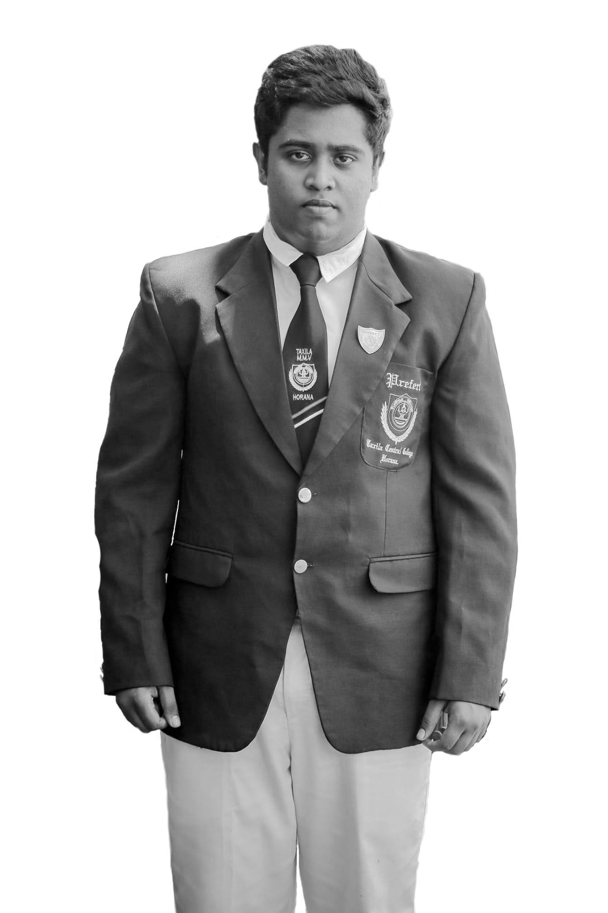
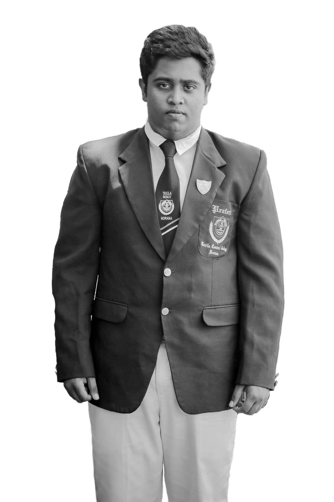

I’m Ravindu Thilakshana. Lives in the village called “Galthude” near Panadura, Sri Lanka. This is my 20th year of listening to euphonious sounds of the nature. Alphabet learnt from the Mahanama College and from that up to this learnt from the Taxila Central College. Choosed IJSE as the university for my further education. I am the elder brother of 2 young brothers. I like quails and dogs. My leisre time is for cycling and traveling.
NAASHNIX.COM
"Everything comes to you, at the right time."
 
